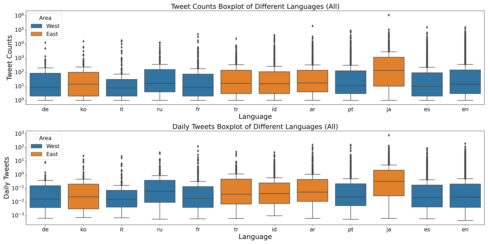

Activeness Analysis
An overview of the dataset
Who is more popular?

Who is more active?


In this project, we would like to play with the language feature from a Twitter dataset. There has always been a stereotype that western people are more active on social media than eastern people. To verify such trends, we propose to analyze the features’ distribution of different language users. We can decide a user's activeness from some features such as tweet counts, friend numbers etc. Besides, we would like to know if users in different cultures (western and eastern) have different using behaviors. In order to do so, we collect tweets and active users by hours and days and generate an active time figure. Moreover, we would like to learn if user in different languages have different following preference. If so, we want to learn to what extent they are going to interact with different clusters. In the end, we could apply machine learning to see if we can predict the language of a user based on the features of his/her own Twitter profile and that of the follower-followee network.
| de | ko | it | ru | fr | tr | id | ar | pt | ja | es | en |
|---|---|---|---|---|---|---|---|---|---|---|---|
| Germany | Korean | Italian | Russian | Franch | Turkish | Indonesian | Arabic | Portuguese | Japanese | Spanish | English |